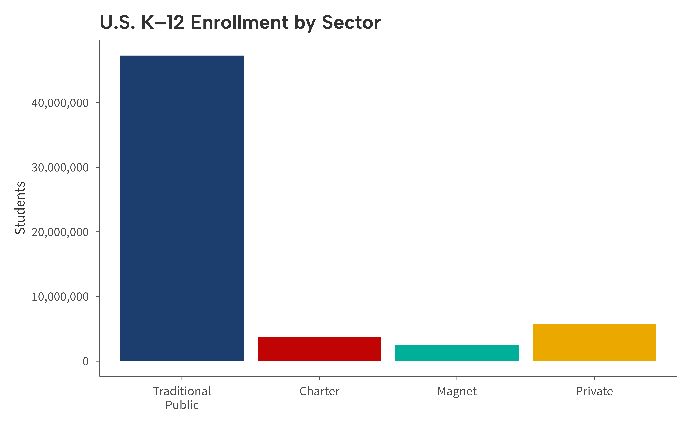

library(ggaib)
#> Brand fonts not found. Using bundled alternatives (Albert Sans, Source Sans 3, Crimson Text).
library(ggplot2)Any ggaib theme can be adapted for slides by increasing the
base_size parameter. The default
base_size = 11 is tuned for print and on-screen reading;
bumping it to 16 or higher makes text legible when projected.
Default vs. presentation sizing
base_size = 11 (default)
ggplot(enrollment, aes(type, students, fill = type)) +
geom_col() +
scale_fill_aib() +
scale_y_continuous(labels = aib_label("comma")) +
labs(
title = "U.S. K\u201312 Enrollment by Sector",
x = NULL,
y = "Students"
) +
theme_aib() +
theme(legend.position = "none")
base_size = 16 (presentation)
ggplot(enrollment, aes(type, students, fill = type)) +
geom_col() +
scale_fill_aib() +
scale_y_continuous(labels = aib_label("comma")) +
labs(
title = "U.S. K\u201312 Enrollment by Sector",
x = NULL,
y = "Students"
) +
theme_aib(base_size = 16) +
theme(legend.position = "none")
Recommended settings for widescreen slides
Most presentation software uses a 16:9 aspect ratio. A good starting point is to export at 10 by 5.625 inches (or the proportional 8.75 by 6.25 for a 1.4:1 ratio that leaves room for slide titles):
ggsave(
"figure.png",
width = 10,
height = 5.625,
dpi = 300
)Using gridlines for data-dense slides
If your slide includes a time-series or scatter plot where readers
need to trace values, use theme_aib_grid() with an
increased base_size:
set.seed(42)
years <- 2005:2023
gap_data <- data.frame(
year = rep(years, 2),
group = rep(c("Higher-Income", "Lower-Income"), each = length(years)),
score = c(
270 + cumsum(rnorm(length(years), 0.3, 0.8)),
240 + cumsum(rnorm(length(years), 0.8, 0.9))
)
)
ggplot(gap_data, aes(year, score, color = group)) +
geom_line(linewidth = 1) +
scale_color_aib() +
scale_x_continuous(breaks = seq(2005, 2025, 3)) +
labs(
title = "Reading Achievement Gap Over Time",
x = NULL,
y = "Average Reading Score"
) +
theme_aib_grid(base_size = 16) +
aib_color_title(
"Higher-Income and Lower-Income 4th-grade scores",
colors = c(
"Higher-Income" = unname(aib_colors("navy")),
"Lower-Income" = unname(aib_colors("red"))
),
element = "subtitle"
) +
aib_direct_label(gap_data, "year", "score", "group",
limits = c(215, 300), breaks = seq(200, 300, 20))
Quick reference
| Context | Theme call |
|---|---|
| Print / report | theme_aib() |
| Slides (clean) | theme_aib(base_size = 16) |
| Slides (gridlines) | theme_aib_grid(base_size = 16) |
| Slides (map) | theme_aib_map(base_size = 16) |